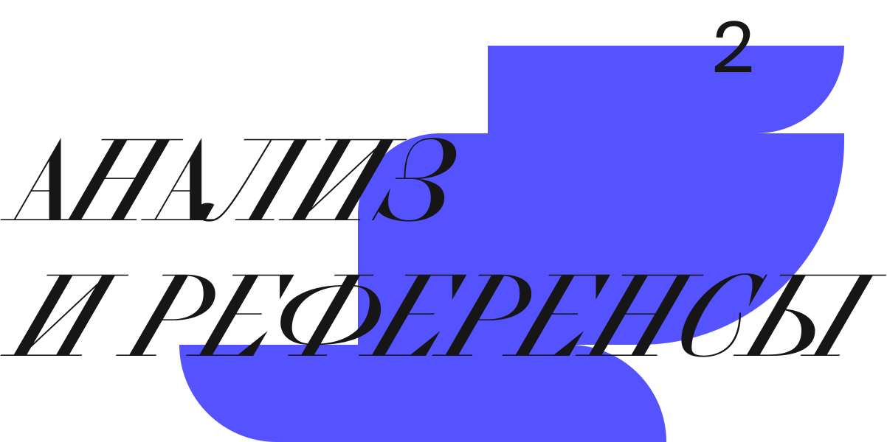
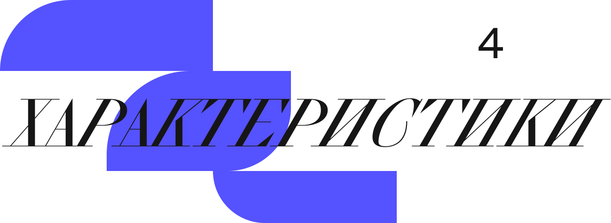

Выбор гарнитуры —
один из основополагающих вопросов
в рутине дизайнера. Мы расскажем
о принципах подбора и поможем
избавиться от сомнений в процессе
работы
один из основополагающих вопросов
в рутине дизайнера. Мы расскажем
о принципах подбора и поможем
избавиться от сомнений в процессе
работы
«Использование неподходящего шрифта
может дать людям ложное представление
о вас и может отрицательно повлиять
на мнения тех, кто может определить ваше
будущее»
может дать людям ложное представление
о вас и может отрицательно повлиять
на мнения тех, кто может определить ваше
будущее»

В одном макете уместен брутализм,
в другом — что-то изящное. Шрифт
должен соответствовать назначению
проекта. Необходимо определить:
в другом — что-то изящное. Шрифт
должен соответствовать назначению
проекта. Необходимо определить:
Область
Строгий
и консервативный
бизнес или же яркий, дерзкий стартап
ЦА
К чему привык представитель, какие ценности он разделяет
Контекст
В истории может крыться ключ к визуальному языку


Определившись, с чем вы
имеете дело, займитесь поиском
референсов. Изучите кейсы в которых
решались задачи, похожие на вашу
и постарайтесь определить, что их
сближает, какие гарнитуры
используются в этих проектах и почему
они уместны
имеете дело, займитесь поиском
референсов. Изучите кейсы в которых
решались задачи, похожие на вашу
и постарайтесь определить, что их
сближает, какие гарнитуры
используются в этих проектах и почему
они уместны
Behance
Площадка для дизайнеров, где они могут размещать работы,
и вдохновляться другими
Are.na
Платформа для творческих исследований,
где дизайнер ищет вдохновение
Pinterest
Библиотека с постоянно обновляемым конентом, которая ориентирована
на пользователя
Fonts in use
Коллекция работ
с применением различной типографики

Каждая гарнитура обладает
индивидуальными свойствами.
Учитывайте ее строение и характер
при выборе шрифта для проекта.
Вот примерный порядок действий:
индивидуальными свойствами.
Учитывайте ее строение и характер
при выборе шрифта для проекта.
Вот примерный порядок действий:
Тон и настроение
проекта
Опишите
в прилагательных графику вашего проекта
Сопоставление
Подберите гарнитуры, которые соответствуют выписанным качествам
Проверка
Посмотрите, где уже использовались данные шрифты, чтобы увидеть их возможности
Характеристики важны еще
и потому, что есть определенные
традиции, которые нельзя не учитывать.
Например старостильные английские
антиквы часто становятся вывесками
пабов, а геометрические и новые
гротески можно нередко увидеть
в городской навигации
и потому, что есть определенные
традиции, которые нельзя не учитывать.
Например старостильные английские
антиквы часто становятся вывесками
пабов, а геометрические и новые
гротески можно нередко увидеть
в городской навигации

Каждый проект индивидуален
и требует особого подхода, но есть
проверенные решения, которые могут
придти на помощь чаще остальных.
Например, удобные гротески
и требует особого подхода, но есть
проверенные решения, которые могут
придти на помощь чаще остальных.
Например, удобные гротески
Геометрический гротеск
Часто используются
в вебе в последнее время. Если сомневаетесь
в шрифте, присмотритесь к ним
Новый гротеск
Динамика и плотность позволяют им быть почти универсальными для текстового
набора

Швейцарская школа повлияла
на мир типографики и дизайна, стала
каноном, к которому обращаются
большинство дизайнеров нашего
времени. Простота верстки, работа
с сеткой и пустым пространством
сегодня до сих пор являются
релевантными и могут помочь вам
при работе с типографикой
на мир типографики и дизайна, стала
каноном, к которому обращаются
большинство дизайнеров нашего
времени. Простота верстки, работа
с сеткой и пустым пространством
сегодня до сих пор являются
релевантными и могут помочь вам
при работе с типографикой


Не смотря на то, что существует
много нюансов при выборе шрифтовой
гарнитуры, большой опыт приходит
именно через развитие чувственного
восприятия, аналитического мышления
и погружение в контекст. Чем больше
вы смотрите и изучаете, тем более
острым будет ваш глаз и тонкое
дизайнерское чутье
много нюансов при выборе шрифтовой
гарнитуры, большой опыт приходит
именно через развитие чувственного
восприятия, аналитического мышления
и погружение в контекст. Чем больше
вы смотрите и изучаете, тем более
острым будет ваш глаз и тонкое
дизайнерское чутье